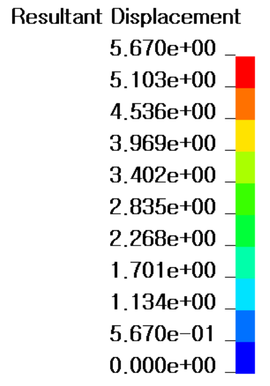
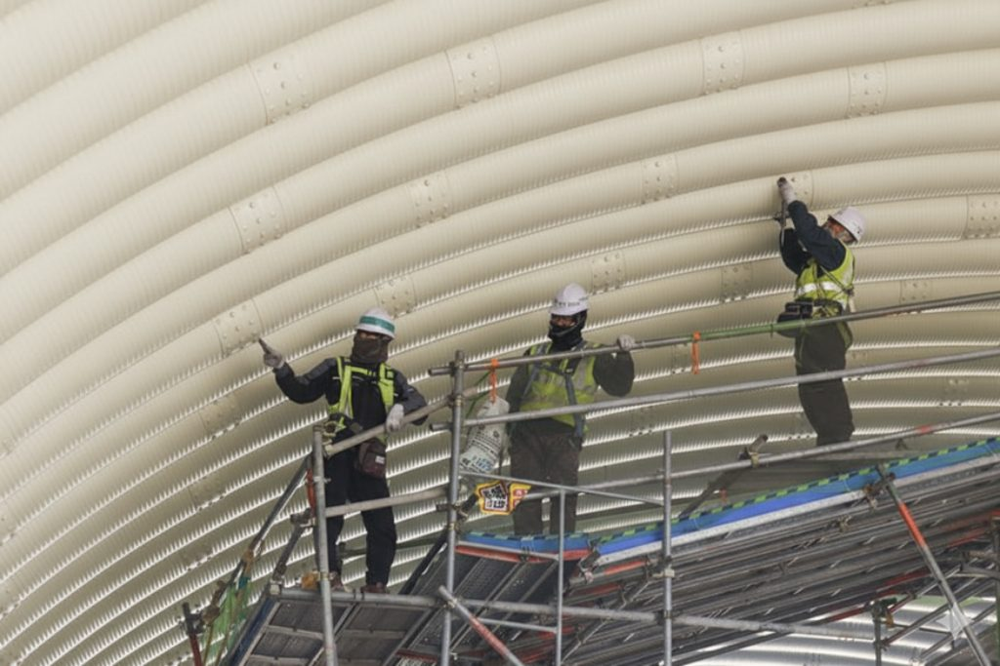
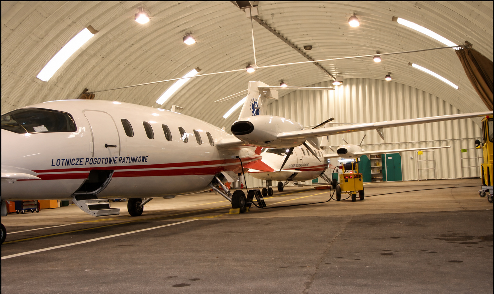
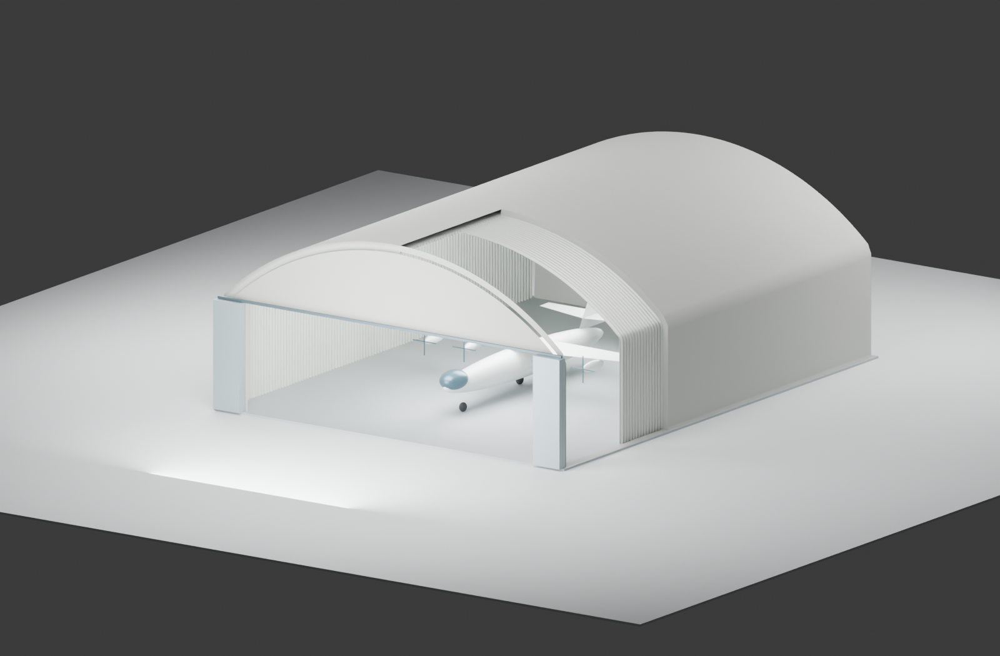
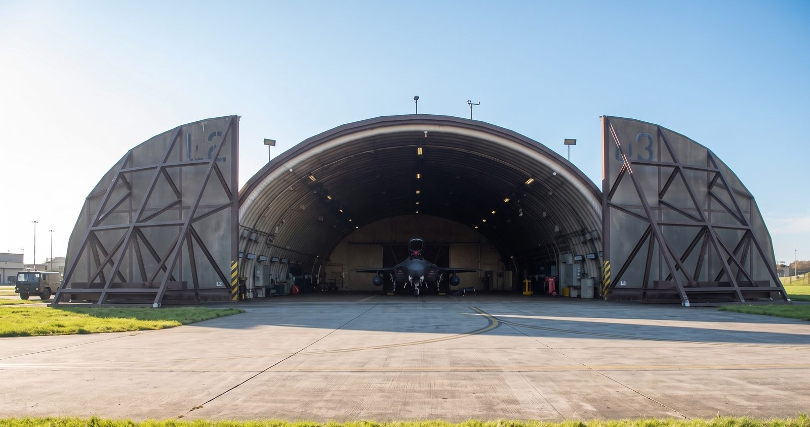
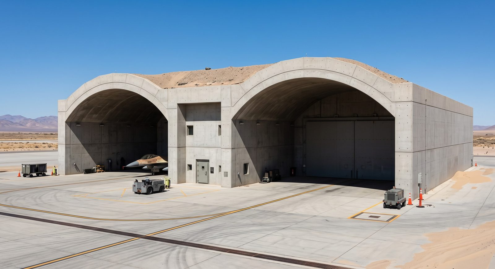
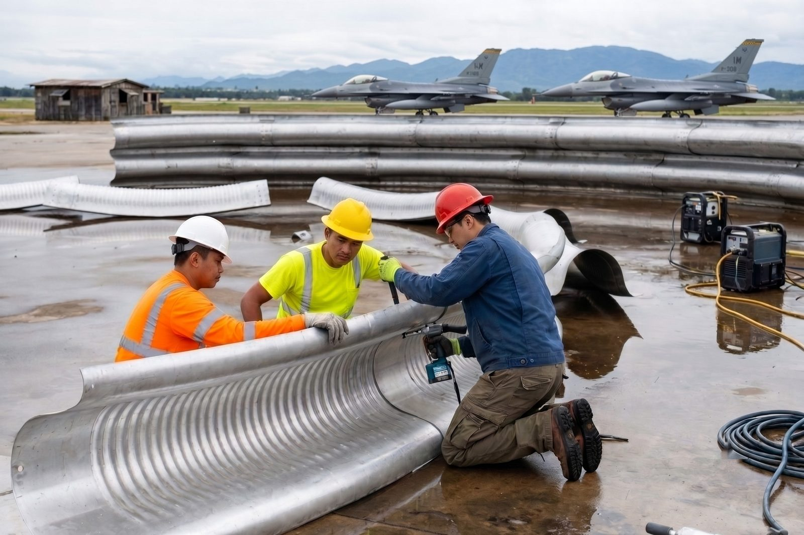
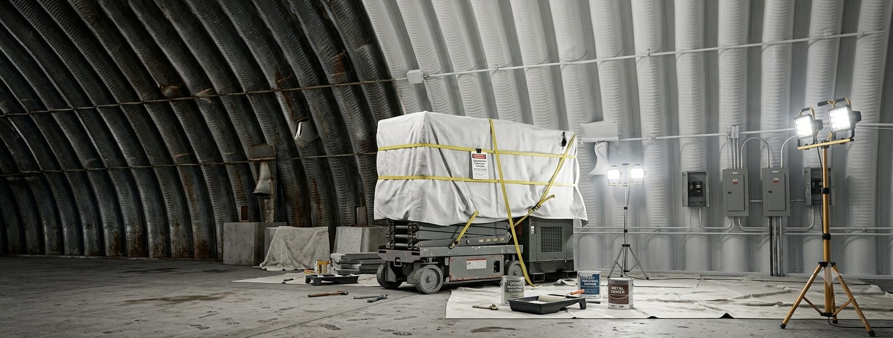

01 / 일반 토목용 · B381

381 × 140 mm
통칭 380×140 대골형. 큰 파형으로 구성되며, 원더아치의 작은 보강 파형이 없는 단면입니다.
렉스틸의 일반 파형강판 주력 제품렉스틸은 381×140 대골형을 일반 파형강판의 주력으로 생산합니다. 통수로·생태통로 등 토목 구조물에 사용하며, 이 제품을 격납고용 스폴라이너로 사용하지 않습니다.
미군·NATO용 지정 스폴라이너의 대체 규격 아님
격납고용 사용 금지 — 렉스틸 적용 방침
라이너·SH DOOR 방폭문 공급부터 HAS·HAAS 전체 설계까지.
렉스틸은 원더아치 라이너와 방폭문 공급, 엔지니어링과 전체 설계를 하나의 창구에서 제공합니다.
B381 일반 대골형, 원더아치 이중파형, 400×200 Steel Rolled Arch Liner. 서로 다른 세 단면을 구분해야 합니다. 강판 두께를 늘리는 것만으로 군용 스폴라이너 시방을 충족하는 것은 아닙니다.
통칭 380×140 대골형. 큰 파형으로 구성되며, 원더아치의 작은 보강 파형이 없는 단면입니다.
렉스틸의 일반 파형강판 주력 제품렉스틸은 381×140 대골형을 일반 파형강판의 주력으로 생산합니다. 통수로·생태통로 등 토목 구조물에 사용하며, 이 제품을 격납고용 스폴라이너로 사용하지 않습니다.
미군·NATO용 지정 스폴라이너의 대체 규격 아님
격납고용 사용 금지 — 렉스틸 적용 방침

미군·NATO 규정 적용 제품
프로젝트별 시방·승인 조건 적용
Wonder Arch Liner · 원더아치 라이너
큰 파형에 작은 보강 파형을 더한 이중파형 단면입니다.
TP 15 §8.1: 2-ft 사인파형 = 약 610 mm
Double Corrugated Steel Spall Liner
이중파형 · 강판 두께 3.2 mm
약 610 mm 주파형 + 이중파형 + 3.2 mm
Section 05 30 00 §1.3 · §2.1.1 시방 참조

미군·NATO 규정 적용 제품
프로젝트별 시방·승인 조건 적용
Steel Rolled Arch Liner · 스틸 롤드 아치 라이너
작은 보강 파형이 없는 단일 심파형 라이너입니다.
Steel Rolled Arch Liner
단일 심파형 · 5 mm급 강판
6 GA 적용 시 계약상 모재 두께 기준 확인
단면·두께·접합의 프로젝트 요구 적용
세부 사양은 기술 협의 시 제공
| 구분 | 610 × 355 · 이중파형 | 400 × 200 · 단일 심파형 |
|---|---|---|
| 제품명 | Double-Wave Steel Arch Liner | Steel Rolled Arch Liner |
| 공급 두께 | 3.2 / 4.0 / 4.5 mm | 3 / 4 / 5 / 6 / 7 / 8 mm |
| 적용 시방 | 확인된 프로젝트 시방: 이중파형 · 최소 3.2 mm | 확인된 프로젝트 사양: 5 mm급 · 6 GA 조건 확인 |
| 소재 · 표면 | 프로젝트 시방에 따른 소재 · 표면처리 · 전착도장 | 프로젝트 시방에 따른 구조용 강판 · 표면처리 |
이중파형은 콘크리트 파편의 비산 방지에 중대한 영향을 미치는 핵심 설계 요소입니다.큰 파형과 작은 보강 파형이 국부 좌굴·변형 거동에 영향을 줍니다. 단면·두께·접합·정착과 콘크리트를 포함한 전체 시스템을 검토해야 하며, B381의 두께를 늘리는 것만으로 지정 라이너를 대체할 수 없습니다.
확인된 프로젝트의 Section 05 30 00 — Steel Arch Liner §1.3은 이중파형을, §2.1.1은 최소 3.2 mm를 요구합니다. 단면·접합 변경은 승인 조건을 따릅니다.
HAS의 개발·시험 배경에서 2-ft 사인파형(609.6 mm)을 설명합니다. 이 조항 자체가 깊이 355 mm·작은 보강 파형·3.2 mm 또는 렉스틸 제품 인증을 명시하는 것은 아닙니다.
TP 15 §1.5의 DESR 6055.09·TP 26 관련 설계·검토 체계와 UFC 3-340-01·UFC 3-340-02, 제품 시방을 구분합니다. 실제 적용은 해당 계약의 최종 시방·도면과 승인 조건으로 정합니다.
참조: TP 15 Rev.5(2026.07) 및 보유 프로젝트 시방. 공개 UFGS 05 30 00은 Steel Decks로 별도 문서입니다. 위 설명은 미군·NATO 전체의 공통 제품 인증이나 동일 조건 비교 성능 배수를 뜻하지 않습니다. B381의 격납고용 사용 금지는 렉스틸의 제품 적용 방침입니다.
영남대학교·경성대학교 연구팀이 LS-DYNA로 검토한 외부 폭발 및 관입 후 폭발의 구조 응답입니다. 실제 해석 결과 이미지와 주요 수치를 함께 확인하세요.



영상은 홍보용 편집본입니다. 아래 주요 수치는 제출 보고서의 해당 해석 조건과 평가 시점 기준입니다.
외부 폭발 해석 — 보고서는 적용한 해석 조건과 평가 방법의 범위에서 구조적 안전성을 확인했다고 결론 내렸습니다.
관입 후 폭발 해석 — 다층 방호구조에서 국부적인 항복과 소성변형은 발생했으나, 검토 종료 시점까지 전체 아치 형상을 유지하고 뚜렷한 내부 파편 비산은 관찰되지 않았다고 보고했습니다.
수치해석 결과이며 실물 폭발시험 인증과 구분합니다. 박락 파편속도·깊이·원추각의 정량 기준 충족을 위 관찰만으로 확정하지 않습니다. 새 C-130 대형 HAS나 4.5mm 확장 설계를 직접 검증한 결과가 아니며, 확대 적용은 별도 해석이 필요합니다.
미 공군과 국방핵청의 역사적 시험자료를 통해 격납고 시스템의 시험 배경을 살펴봅니다. 시험 시기와 구조 형식, 결과를 구분해 읽어야 합니다.


Aircraft Shelter Explosives Quantity-Distance Evaluation
AD0886769 · AFWL-TR-71-65
Jon M. Jorgensen · 미 공군 무기연구소. 표준 이중파형 아치 격납고의 내부 폭발이 인접 격납고에 미치는 영향을 평가했습니다.
결과의 범위 폭발원 격납고는 파괴됐고, 인접 격납고에는 정도가 다른 손상이 기록됐습니다. 위 두 사진은 이 시험의 폭파 장면과 시험 후 상태입니다.
High Explosive Testing of Hardened Aircraft Shelters
ADP001768 · DISTANT RUNNER
Ronald R. Bousek · 미 공군 / 국방핵청. 실물 크기 제3세대 격납고의 외부·내부 폭발시험으로 폭발물 안전 이격거리와 구조 응답을 평가했습니다.
결과의 범위 외부 폭발에 대한 보호 효과와 내부 폭발 시 파괴 거동을 함께 보고합니다. 일부 내부 시험에서는 격납고와 항공기가 파괴됐으며, 항공기에서 폭탄을 투하한 시험으로 소개하지 않습니다.
사진은 보고서 원본에서 추출했습니다. 과거 시험체의 기록이며 렉스틸 현행 제품 자체의 미군 인증이나 모든 폭발 조건에 대한 안전 보증을 뜻하지 않습니다. 1971년 보고서는 첫 장의 1977년 공개 승인 표기를 확인했습니다.
보도는 대만이 계획한 ‘이중파형 강재 라이닝’에 대해 취재원의 다음과 같은 지적을 전했습니다.
台灣規劃興建的「雙波浪鋼材襯裡」並非美軍規範材質，且厚度僅3mm대만이 건설을 계획한 ‘이중파형 강재 라이닝’은 미군 규정에 맞는 재질이 아니며, 두께도 3mm에 불과하다.
출처: 菱傳媒(링촨메이) · 2024.04.25
표면처리·도장·품질 확인과 현장 조립 과정을 사진으로 살펴보세요.



철골 격납고와 콘크리트 피복 HAS를 구분합니다. 원더아치 610×355 라이너는 3.2 / 4.0 / 4.5 mm 옵션에서 프로젝트별로 검토합니다.
주 철골이 대공간을 지지하고, 내부 라이너·미네랄울·외측 퍼린·외부 장갑판으로 요구 방호 조건에 대응하는 방식입니다.
폭 50m · 문 개구 44×14m갤러리의 공간계획 예시입니다. C-130J 외형과 비교한 명목 여유는 문 좌우 각각 약 1.80m, 상부 약 2.16m입니다. 문틀·설비·운용 여유를 포함한 상세 검토는 별도입니다.
원더아치 라이너와 콘크리트 피복을 함께 계획합니다. 타설 중 임시 지지와 완성 후 콘크리트 구조를 각각 검토합니다.
약 21.6m · 25.0m 형식 참고공개 TP 15 §8.1의 기존 HAS 폭입니다. 당사 4.5mm 제품의 허용 최대 경간을 뜻하지 않습니다. HAAS의 단면·두께도 해당 시방에 따라 별도로 정합니다.
C-130J의 날개폭 40.41m·높이 11.84m를 바탕으로 출입구와 내부 유효 공간부터 계획하는 별도 확장 설계입니다.
대형화에 맞춘 지지·피복 설계22m급 HAS를 같은 두께와 지지점 수로 단순 확대하지 않습니다. 4.5mm 적용 가능 범위, 콘크리트 두께, 기초와 문은 전체 구조·방호 검증으로 결정합니다.
HAS는 항공기 보호, HAAS는 경계·출격 대기를 고려한 강화 격납고를 뜻합니다. 라이너는 약어만으로 결정하지 않으며 임무·형상·하중과 승인된 시방에 따라 선정합니다.



폭 50m · 길이 66m · 최고 높이 23.5m · 계획 문 개구 44×14m. 철골·문·접합·방호성능을 확정한 설계가 아닌 공간·구성 검토용 3D 모델입니다.


콘크리트 아치와 내부 원더아치 라이너로 구성하는 대형 HAS의 공간계획입니다. 기체는 C-130급 외형 치수를 참고한 단순 모형이며, 문은 열린 상태를 표현했습니다. 실제 시공 사례나 구조·방호 승인을 받은 설계가 아닙니다.














라이너·방폭문 공급부터 구조·폭발하중 해석, 시공 지원과 전체 설계까지 필요한 범위를 협의합니다.
전체 설계 패키지(별도 견적): 렉스틸이 전문 설계사 네트워크와 함께 HAS·HAAS 전체 설계를 수행합니다. 설계 분야별 수행 범위, 책임기술자(EOR), 날인과 현지 승인·인허가 업무는 해당 프로젝트 계약에 명시합니다.
SH DOOR TECH와 문 개구부·문틀·레일·구동부, 라이너와 콘크리트의 시공 순서를 함께 검토합니다. 문 형식과 방호 사양은 프로젝트 요구조건에 맞춰 정합니다.
SH DOOR TECH 브로셔 보기 ↗문 구조체·트러스·레일·문틀과 현장 조립·인양
롤러·구동부·제어반과 인원 출입문 등 계약 범위
제작도·재료·용접·검사 절차와 라이너 접합부 조율
제작 검사·설치·시운전·운전자 교육 지원
공개 카탈로그와 기술 참고자료는 바로 열어볼 수 있습니다. 상세 설계·해석자료는 문의해 주세요.
프로젝트의 시설 형상과 공급 범위를 알려주시면 제품·설계·시공 지원을 안내해 드립니다. 상세 기술자료는 NDA 체결 후 제공합니다.
메일 주시면 NDA 기술자료와 공급범위 문서를 보내 드립니다.